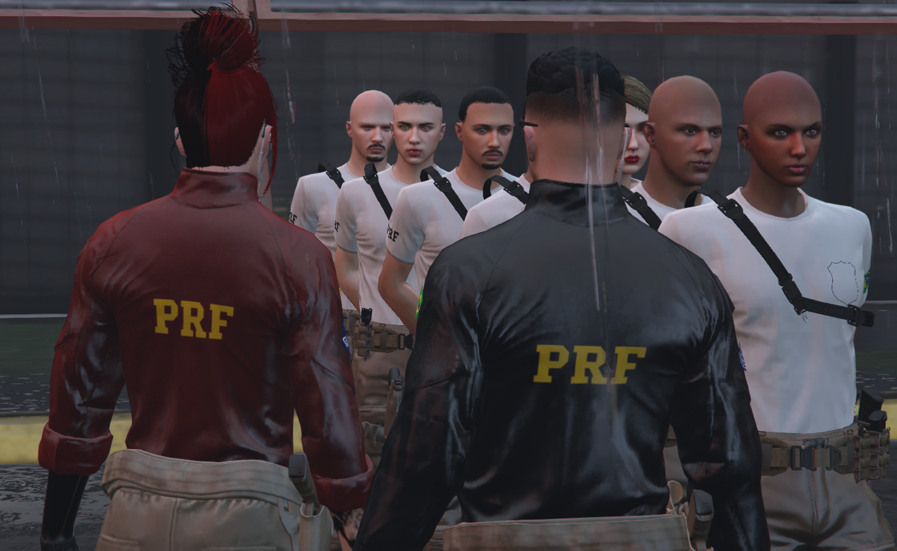

SÃO PAULO - JAGUARÉ
MINISTÉRIO DA JUSTIÇA E SEGURANÇA PÚBLICA
POLÍCIA RODOVIÁRIA FEDERAL
A Polícia Rodoviária Federal foi criada pelo presidente Washington Luiz no dia 24 de julho de 1928 (dia da Polícia Rodoviária Federal), com a denominação inicial de “Polícia de Estradas”. Em 1935 Antônio Felix Filho, o “Turquinho”, considerado o 1º Patrulheiro Rodoviário Federal, foi chamado para organizar a vigilância das rodovias Rio-Petropólis, Rio-São Paulo e União Indústria. Sua missão era percorrer e fiscalizar as três rodovias utilizando duas motocicletas Harley Davidson e nessa empreitada contava com a ajuda de cerca de 450 vigias da então Comissão de Estradas de Rodagem (CER).
Em 23 de julho de 1935 (dia do Policial Rodoviário Federal), foi criado o primeiro quadro de policiais da hoje Polícia Rodoviária Federal, denominados, a época, “Inspetores de Tráfego”. No ano de 1945, já com a denominação de Polícia Rodoviária Federal, a corporação foi vinculada ao extinto Departamento Nacional de Estradas de Rodagem (DNER).
Finalmente, em 1988, com o advento da Constituinte, a Polícia Rodoviária Federal foi integrada ao Sistema Nacional de Segurança Pública, recebendo como missão exercer o patrulhamento ostensivo das rodovias federais. Desde 1991, a Polícia Rodoviária Federal integra a estrutura organizacional do Ministério da Justiça, como Departamento de Polícia Rodoviária Federal
Atualmente, a Polícia Rodoviária Federal tem sob sua responsabilidade a segurança viária e a prevenção e repressão qualificada ao crime em mais de 75 mil quilômetros de rodovias e estradas federais em todos os estados brasileiros e nas áreas de interesse da União. Uma instituição que provê a pronta resposta federal às mais diversas demandas de segurança pública do Brasil.

As áreas de atuação da PRF são fundamentais para a manutenção da segurança nas rodovias do Brasil. Cada área desempenha um papel específico, contribuindo para a eficiência e eficácia do trabalho policial. Entre essas áreas, destacam-se:
Cada uma dessas áreas exige conhecimentos e habilidades específicas. Os profissionais da PRF devem estar preparados para lidar com situações diversas, por isso, investem em treinamentos permanentes e na atualização de conhecimentos. O papel da PRF é vital para a segurança pública, e a diversidade de áreas de atuação permite uma resposta ágil e adequada a diferentes desafios, promovendo a integridade nas rodovias.